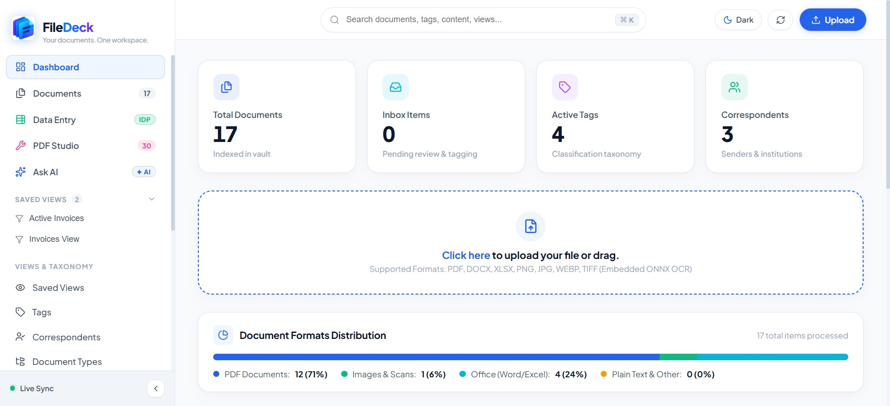
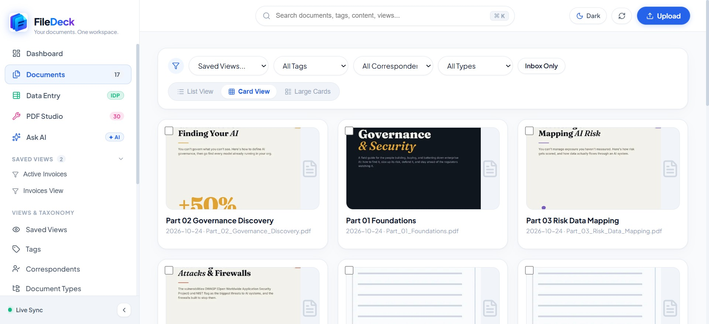
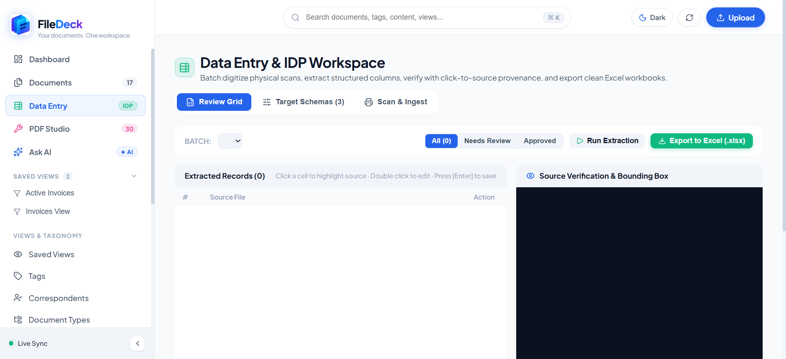
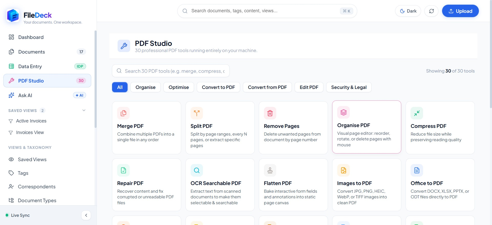
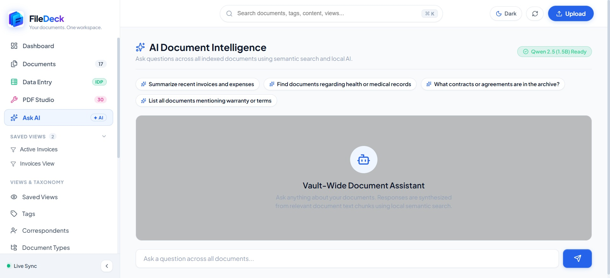
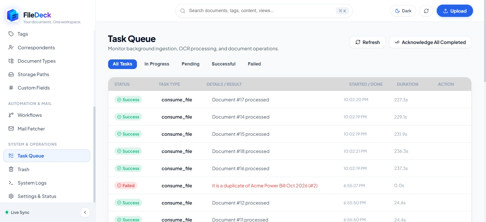

FileDeck organizes paperwork with sub-millisecond Tantivy search, on-device Qwen 2.5 AI, schema-driven data entry, and 30 native PDF utilities. No cloud accounts. Zero outbound telemetry.

Online document tools upload sensitive contracts, invoices, and bank statements to remote servers. FileDeck executes OCR, full-text indexing, and AI synthesis strictly on your local CPU.
Every screen engineered for speed, privacy, and local execution. Click on any snapshot to view the high-resolution interface.
Storage health overview, disk usage breakdown, tag distribution cloud, and rapid-access cards for recently processed files.

Multi-format ingestion (PDF, DOCX, XLSX, images). Table, card, and preview modes with instant faceted filters, saved views, and metadata drawer.

Human-in-the-loop review interface for bills and invoices. Click cells to inspect bounding box overlays, run validation schemas, and export to Excel (.xlsx).

Native offline tools: merge, split, compress, repair, OCR, Office to PDF conversion, blackout redact, signature stamps, and side-by-side diff comparison.

On-device Qwen 2.5 (1.5B Instruct) running on standard CPUs. Query across your local documents, extract clauses, and retrieve pinpoint citations without internet access.

Real-time worker pipeline monitoring for RapidOCR batches, text extraction jobs, retry handling, and 30-day soft-delete trash restoration.
Replace disjointed web converters and manual data entry with a cohesive, offline desktop workstation.
Dedicated offline engine covering structure, optimization, conversion, security, and annotation. Supports AES-256 password encryption, irreversible blackout redactions, visual diff comparison, and batch image extraction without page limits.
Extract tabular fields from invoices, receipts, and forms. Features human-in-the-loop review with click-to-source bounding box inspection, regex validation rules, scanner ADF hardware integration (WIA/NAPS2), and direct export to styled Excel workbooks.
Local 1.5B Instruct model running 100% on CPU via GGUF quantization. Summarize agreements, extract terms, and query paperwork with exact document citations.
In-memory Rust index over OCR text, titles, correspondents, and custom notes. Delivers sub-millisecond query results across hundreds of thousands of document records.
Store document revisions, audit changes, generate Archive Serial Numbers (ASN), and preserve deleted records inside an automatic 30-day soft-delete safety trash net.
Zero subscriptions. Zero accounts. Standalone desktop releases powered by Tauri v2 with bundled backend engines.
git clone https://github.com/samolubukun/Filedeck.git
“FileDeck combines the privacy of offline software with the speed of modern search and 30 native PDF tools — without uploading confidential documents to third-party web servers.”
Common questions regarding local processing, CPU requirements, search indexing, and offline architecture.
FileDeck is open source under the MIT license. Check out our GitHub issues and discussions.
Visit GitHub Repository